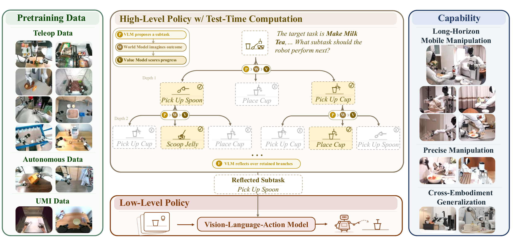
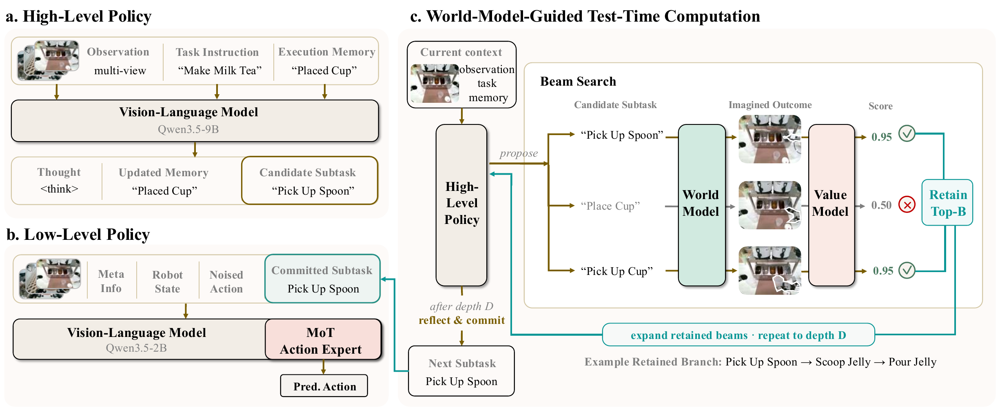

τ₀-VLA：用世界模型引导测试时计算的
分层机器人基础模型
一个长达 12 分钟、包含 25 个有序步骤的家务任务，机器人真正的难点已经不是"这一帧该输出什么关节角"， 而是"我做到哪一步了、下一步该做什么、刚才那一步是不是失败了"。τ₀-VLA 的答案是： 把子任务暴露成显式接口，在决策点上先用世界模型预测各候选子任务的视觉后果，再比较、再提交， 并用一套可被修正的执行记忆把预测与物理现实持续对齐。
（直接执行为 27.5%）
下一子任务预测精度提升
决策精度提升
（多模态共训练）
（含掩码机制）
有序步骤数区间
本报告分三层组织：动机与方法（§1–§5）解释论文在讲什么；技术实现（§6–§8） 对照官方开源实现，把论文里一句话的设计还原成代码层面的具体契约；实验与评述（§9–§12） 梳理数据、结论边界与未解问题。带 青绿色标记 的段落表示结论直接来自代码而非论文正文。
00速览：一页话讲清 τ₀-VLA
如果只读一段，读这一段。
τ₀-VLA 是一个面向长时序操作（long-horizon manipulation）的分层机器人基础模型。 它把一个完整任务拆成两个在不同时间尺度上运行的策略：
高层策略
只在子任务边界被调用。输入任务指令、当前观测、执行记忆， 输出下一个子任务的自然语言描述，同时更新进度记录。 当它对自己的决策不自信时，会额外花算力去搜索、预测和反思。
低层策略
以正常控制频率运行的通才 VLA。Qwen3.5 视觉语言骨干 + Mixture-of-Transformers 动作专家，用条件流匹配训练， 在统一 40 维状态/动作空间上跨本体执行被选中的子任务。
论文的三个核心技术贡献，可以对应到三个具体机制：
- 世界模型引导的测试时计算（TTC）：不再"一次前向定生死"。 提出多个候选子任务 → 用世界模型预测每个候选执行后的视觉结果 → 用价值模型给预测结果打分 → 比较分支后再提交。 这把决策的证据从"当前观测"扩展到了"想象中的未来观测"。
- 选择性计算（置信度路由）：不是所有决策都值得深思。 用 token 置信度统计判断当前决策是否不确定，高置信直接放行，低置信才展开搜索。 这让"更多算力=更好决策"这条曲线在实际部署中变得经济可用。
- 可修正的执行记忆：抓空了、物体不见了，进度记录就会失真。 τ₀-VLA 允许记忆在新视觉证据与记录冲突时前进、回滚或重试。 关键是这些纠错行为不需要专门采集纠错数据集——通过扰动已有演示派生出的记忆就能学到。

assets/overview.png）。
上层是带记忆的高层决策与世界模型搜索，下层是跨本体的通才执行策略。
01问题：长时序任务为什么会崩
任务从几秒变成几分钟，失败的主导原因发生了迁移。
论文的动机建立在一个经验观察上：随着任务时长增长，失败原因的构成变了。 准备一杯奶茶要依次倒奶、倒茶、加小料、盖盖、插吸管，几十个步骤； 打扫房间还要移动、收衣服、挂包、递毯子、扔垃圾。在这种任务里：
- 短时任务的瓶颈是动作精度——抓得准不准，轨迹平不平滑。
- 长时任务的瓶颈是进度跟踪、结果预测与子任务规划—— 机器人必须记住做完了什么、选出下一个恰当的步骤、并在动作失败后恢复。
现有分层 VLA 的共同缺陷
分层 VLA 本身不新：把语言子任务作为高层推理与低层控制之间的接口，是已经被广泛采用的做法。 论文指出的问题在于——大多数方法的每一次高层决策都只用一次前向传播完成。 它们把当前观测和执行历史直接映射到下一个子任务，过程中：
- 没有显式比较备选方案；
- 没有估计这些备选方案会导致什么物理状态。
这带来一个致命的不对称：一个糟糕的决策往往要等到执行之后才被发现，而此时环境已经被改变了。 倒错了顺序、盖子盖歪了、把该留的东西扔了——这些错误不是"重来一次"就能抹平的。 长时序任务里，错误会沿着后续步骤复合放大（compound）。
反过来看：单靠低层策略也不行
论文在结尾处给出了一个对称的论述，值得提前引用，因为它解释了为什么必须做分层：
- 一个低层 VLA 可以可靠地把观测映射成动作块，但当它无法判断这些动作对应长时序任务的哪个阶段时，仍然会失败。
- 反之，一个高层策略可以提出看起来合理的计划，但缺少"实际发生了什么"的反馈时，也会失败。
τ₀-VLA 把两者连起来：一个跟踪进度并预测结果的高层策略，配一个把选定子任务落地为机器人动作的执行器。
02核心思想：为什么"子任务"是好的搜索空间
测试时计算的前提是有一个可搜索的空间。论文论证了子任务恰好满足这个条件。
LLM 领域的测试时计算（test-time computation）已经被证明有效：多采样、验证、反思。 但把它搬到机器人上有个障碍——在什么空间里搜索？ 在原始动作空间（关节角序列）里搜索是灾难性的：维度高、时间步密、单步差异在语义上几乎没有意义、 也无法通过视觉判断好坏。
论文的关键论断是：子任务构成了一个紧凑、语义结构化的搜索空间，因为它同时满足三个性质：
稀疏的决策边界
子任务只在稀疏的决策边界处发生。这意味着搜索的调用次数是可控的， 不需要在每个控制周期都推理。
对齐任务的逻辑阶段
子任务与任务的逻辑阶段天然对齐（"倒奶"、"盖盖子"）， 因此候选之间的差异是语义级别的，可以被语言模型有意义地枚举和排序。
产生可视觉评估的变化
一个子任务执行完会带来可见的场景变化。 这是关键——它使得"预测后果 + 用视觉打分"这条路径成立。
第三点特别重要，它是世界模型能够介入的原因。如果候选之间的差异不可见， 那么预测视觉后果就毫无价值；正因为"盖上盖子"和"插入吸管"会产生截然不同的图像， 价值模型才能从预测图像中读出候选的质量。
Plan Once : a* = πhi(ot, mt, g) // 单次前向
Best-of-N : a* = argmaxa∈A V(a | ot, mt, g) // 一步候选排序
TTC : a* = argmaxbranch V( W(ot, a1..k) ) // 世界模型 W 展开多步分支后评分
符号：o=观测，m=执行记忆，g=任务指令，V=价值模型，W=世界模型。 上式为便于理解的示意写法，非论文原式。
03整体架构：两套系统，两个时间尺度
分层的本质是解耦时间尺度：高层在子任务边界上思考，低层在控制周期上执行。

assets/method.png）。
左：记忆感知的高层决策；中：选择性的世界模型引导搜索；右：低层 VLA 执行。
3.1 高层策略：读记忆、出子任务、更新进度
在每个子任务边界上，高层策略执行一个闭环：
-
Step 1 · 读取读入任务指令 + 当前观测 + 执行记忆
执行记忆（execution memory）是一份进度记录，描述"到目前为止哪些步骤已经完成"。 它不是原始图像历史，而是被结构化过的、语义级的进度状态。
-
Step 2 · 路由用 token 置信度统计决定是否加算力
这是 τ₀-VLA 的"选择性"所在。置信度高 → 立即行动；置信度低 → 进入下一步的搜索流程。
-
Step 3 · 搜索（条件触发）提出备选 → 世界模型预测后果 → 价值模型打分 → 比较分支
搜索与反思在此比较各分支，然后才提交其中一个。
-
Step 4 · 提交把选中的子任务下发给低层策略
低层策略拿到的是一个有界的（bounded）子任务， 而不是整个长任务指令。这一点在实验中被证明极其重要（见 §9.1）。
-
Step 5 · 闭环用实际观测到的执行结果更新记忆
这一步闭合了"预测后果"与"物理后果"之间的回路。 没有这一步，世界模型的想象就会与现实脱钩。
3.2 低层策略：一个通才 VLA，两种输入模式
低层策略是一个通才（generalist）VLA。它的一个重要工程性质是： 控制接口在两种设置下完全一致——
这个设计使消融实验变得干净：论文报告的 27.5% → 45.0% 的提升， 不是因为换了更强的执行策略， 而纯粹反映了"显式跟踪进度并决定下一步做什么"所带来的收益。
04世界模型引导的测试时计算
论文最核心的技术贡献。三个组件：置信度路由、世界模型展开、价值模型评分。
4.1 置信度路由：什么时候值得多想
直接对每个决策都做搜索是不经济的：世界模型的视觉预测和多步分支展开都很贵。 τ₀-VLA 用token 置信度统计做路由：
论文明确表述：这种选择性测试时计算使下一子任务准确率在域内与分布偏移设置下提升了 15–24 个百分点。 注意这是"选择性"版本的收益，而不是"永远搜索"版本的收益——后者会贵得多，收益却接近饱和（见 §4.3）。
4.2 搜索、后果预测与反思
论文比较了三个层级的高层决策方式，理解它们的差异是理解 TTC 价值的关键：
| 方式 | 做什么 | 用到的证据 | 相对成本 |
|---|---|---|---|
| Plan Once | 做一次子任务预测 | 当前观测 + 记忆 | 1× |
| Best-of-N | 采样并评分多个一步候选 | 当前观测 + 记忆 + 候选本身 | N× |
| TTC | 进一步展开多步分支，带后果预测与反思，然后提交 | + 世界模型预测的未来观测 | ≫ N×（但被路由摊薄） |
表 1 · 三种高层决策方式。关键区别在最后一列证据：只有 TTC 使用了"想象中的未来观测"。
论文对 TTC 优势来源的解释非常直接：在决策时刻预测后果，提供了超越单次前向预测或一步候选排序的额外证据。 这也解释了为什么优势在分布偏移下最明显—— 当布局是没见过的，模型的先验（"通常下一步是什么"）不可靠， 但"如果我这么做，场景会变成什么样"这个物理推理仍然可迁移。
在未见过的 Book Organization 布局（out-of-domain）上： Plan Once 的下一子任务准确率 50.0%， Best-of-N 57.5%， TTC 74.0%。 Best-of-N 相比 Plan Once 只提升了 7.5 点，而加入后果预测后又提升了 16.5 点—— 额外的算力必须花在"预测物理后果"上才有大收益，单纯多采几个候选是不够的。
4.3 计算量–精度曲线：收益会饱和
论文对 scaling 行为给出了一个诚实的描述，这对实际部署很有指导意义：
- 在低到中等计算预算区间，准确率提升很快；
- 之后逐渐饱和（gradually saturates）；
- 因此"收益不需要无限算力"，而置信度路由正是为了落在曲线的高性价比段。
这也构成了一个方法论上的自洽闭环：如果收益不饱和，那么"选择性"就没有必要——一直搜索就好； 正因为收益饱和且成本线性增长，把算力定向投放到不确定的决策上才是最优策略。
05可修正的执行记忆：让记忆与物理世界同步
这是论文里容易被忽略、但工程价值极高的一节。
整个闭环要可靠，前提是执行记忆必须与物理世界保持同步。 但现实会不断破坏这种同步：
- 抓取失败：机器人以为"已拿起杯子"，实际上手是空的 → 记忆过于乐观；
- 物体缺失：要找的东西不在预期位置 → 一个原本合理的进度记录变成了错误的；
- 记忆滞后：某步实际已完成，但记录没更新 → 机器人重复劳动。
论文的处理方式是让记忆可被修正（revisable）。 当新的视觉证据与记忆冲突时，τ₀-VLA 可以采取三种操作：
前进
视觉表明进度实际上比记录更靠前（记忆滞后）→ 跳过已完成的步骤，把记录推进到正确位置。
回滚
视觉表明某个"已完成"的步骤其实没成（记忆过于乐观）→ 撤回该条记录。
重试
当前步骤未达成预期结果 → 重新执行，而不是盲目推进到下一步。
重要的是，论文强调修正是局部的：纠正滞后或过于乐观的记录时， 仍然保留此前有效的进度（preserving valid earlier progress）。 这不是"出错就重置"，而是精确定位到出错的那一条记录。
如何学到这些纠错行为：扰动已有演示
纠错行为通常需要"失败-恢复"数据，而这类数据极难采集（你得故意让机器人失败，还要标注恢复过程）。 τ₀-VLA 绕开了这个问题：它通过扰动从已有演示派生出的记忆来学习这些行为，不需要单独采集纠错数据集 （without collecting a separate correction dataset）。
直觉上：取一段成功演示，人为把它的进度记录改错（多写一步 / 少写一步 / 写错一步）， 然后训练模型在看到真实观测时把记录纠正回来。 成功演示天然携带了"正确的进度记录"这一监督信号，扰动只是把它变成了纠错任务的训练样本。
效果：论文报告可修正记忆单独带来 11.0 个百分点的下一子任务准确率提升。 这与 TTC 的 15–24 点是两个相对独立的贡献——一个管"决策前多想"，一个管"决策依据别失真"。
m't = Revise(mt, ot) // advance / roll back / retry
at = Decide(g, ot, m't) // 置信度路由 → Plan Once 或 TTC
ot+1 = Execute(at) // 低层 VLA 在控制频率上执行
mt+1 = Update(m't, at, ot+1) // 用观测到的结果闭环
06低层策略的技术细节
本节及后两节对照官方开源实现，把论文里的一句话还原为可验证的代码契约。
主要来源：src/tau0_vla/models/.../modeling_tau_vla.py。
6.1 骨干 + 动作专家：Mixture-of-Transformers 的具体形态
论文描述低层策略为"Qwen3.5 视觉语言骨干 + Mixture-of-Transformers 动作专家， 通过条件流匹配训练"。代码里这被实现成两个逐层配对的塔：
full_attention，部分层为
linear_attention（GatedDeltaNet）。使用 3D M-RoPE。
full_attention（不使用 GatedDeltaNet）。
使用 1D RoPE。
为了让两塔能在序列维度上拼接做联合注意力，代码在构造时强制对齐了若干超参：
# 层数对齐：专家层数被强制改为与 VLM 相同，且全部为 full_attention
if self.config.qwen_expert_config.num_hidden_layers != vlm_num_layers:
self.config.qwen_expert_config.num_hidden_layers = vlm_num_layers
self.config.qwen_expert_config.layer_types = ["full_attention"] * vlm_num_layers
# 头数 / head_dim 对齐：联合注意力要在 seq 维 concat，这三项必须一致
self.config.qwen_expert_config.num_attention_heads = vlm_text_config.num_attention_heads
self.config.qwen_expert_config.num_key_value_heads = vlm_text_config.num_key_value_heads
self.config.qwen_expert_config.head_dim = vlm_text_config.head_dim代码注释里还记录了相对上一代（Qwen2 系）架构的几项关键差异，可视为 Qwen3.5 骨干带来的收益：
| 机制 | 做法 | 意义 |
|---|---|---|
| Gated Query Attention | q_proj → [Q, gate]，输出为 attn * sigmoid(gate) |
为注意力输出加一个逐通道门控，增强表达力 |
| QK-Norm | 内建 per-head RMSNorm 作用于 Q/K | 稳定长序列下的注意力数值 |
| Partial RoPE | 只对 25% 的 head_dim 施加旋转（256 维中的 64 维） | 保留部分非旋转通道承载与位置无关的信息 |
| RoPE 施加时机 | 在 concat 之前分别施加 | VLM 用 M-RoPE，专家用 1D RoPE，两者位置语义不同，必须分开加 |
| Qwen3.5 RMSNorm | (1 + weight) * norm(x)，weight 初始化为 0 |
初始化即恒等映射，便于从预训练权重稳定起步 |
表 2 · Qwen3.5 骨干的关键机制（整理自代码文档字符串）。
6.2 联合注意力：MoT 的交互规则
这是整个实现里最精妙的部分。VLM 有两种层类型，代码对它们采取完全不同的交互策略：
[VLM_K | Expert_K]，
动作 token 既能看 VLM 前缀，也能在动作块内双向互看。
if vlm_layer_type == "full_attention":
# === 联合注意力 ===
vlm_q, vlm_k, vlm_v, vlm_gate = vlm_layer(vlm_hidden, compute_kqv=True)
exp_q, exp_k, exp_v, exp_gate = expert_layer(expert_hidden, compute_kqv=True,
ada_cond=ada_cond)
# RoPE 必须在 concat 之前分别施加：VLM=MRoPE，Expert=1D RoPE
vlm_q, vlm_k = apply_rotary_pos_emb(vlm_q_t, vlm_k_t, vlm_cos, vlm_sin)
exp_q, exp_k = apply_rotary_pos_emb(exp_q_t, exp_k_t, exp_cos, exp_sin)
# 前缀只看前缀；后缀能看 [前缀 | 后缀]
vlm_att = self.attention_interface(vlm_q, vlm_k, vlm_v,
mask_2d[:, :vlm_seq_len, :vlm_seq_len])
exp_key = torch.cat([vlm_k, exp_k], dim=1)
exp_val = torch.cat([vlm_v, exp_v], dim=1)
exp_att = self.attention_interface(exp_q, exp_key, exp_val, mask_2d_exp)
elif vlm_layer_type == "linear_attention":
# === 独立处理：VLM 用 GatedDeltaNet，专家做自身的 full attention ===
vlm_hidden = vlm_layer(vlm_hidden, attention_mask=vlm_pad_mask, past_key_values=None)
expert_hidden = ... # 只对后缀做自注意力代码里有一段明确的降级逻辑：VLA 的联合注意力需要非因果的 2D 掩码 （动作块内部要双向可见），而 FA2 无法直接接受显式 2D 掩码。 因此实现是：VLM 单独前向（纯因果，VQA/FAST 路径）保留 FA2；VLA 联合路径降级为 带显式掩码的 SDPA。
但作者又找回了一部分性能：当前缀确实是因果且右填充时，
tau_vla_prefix_flash_backend=true 会让前缀自注意力
走 F.scaled_dot_product_attention(attn_mask=None, is_causal=True)，
从而被 PyTorch 分派到 Flash 后端；后缀/动作注意力仍用显式掩码。
示例训练配置里这个开关是打开的。
6.3 条件流匹配：训练目标与采样
动作头不是自回归离散 token，也不是 DDPM，而是流匹配（flow matching）。 训练时的构造非常干净：
t ~ 0.999 · Beta(1.5, 1.0) + 0.001 // 时间步采样偏向小 t
xt = t · ε + (1 − t) · a // ε~N(0,I)，a 为真实动作块
ut = ε − a // 目标速度场
L = MSE( ut, vθ(xt, t, o, s, ℓ) ) // 也支持 L1（loss_type="L1_fm"）
# 推理：反向欧拉积分，默认 num_steps = 10
dt = −1 / num_steps , x1 = ε , xt+dt = xt + dt · vθ(xt, t)
几个值得注意的实现细节：
-
Beta(1.5, 1.0) 时间采样：
sample_beta(1.5, 1.0, ...)使采样偏向较小的 t（更接近干净动作的一侧），把训练算力集中在轨迹末段的精细化上。 -
后缀 token 布局：后缀 =
[state_emb] + [action_time_emb × H]， 长度为n_action_steps + 1。时间步通过正弦嵌入（周期 4e-3 ~ 4.0） 与动作嵌入拼接后过一个 SiLU MLP 融合。 -
后缀注意力掩码：
att_masks[:, :2] = True， 其余为 False——即只有前两个位置构成因果边界，动作块内部是双向可见的。 这正是必须放弃纯 FA2 的原因。 -
可选 AdaNorm 时间条件：
adanorm_time=true时， 专家塔内的 RMSNorm 被替换为AdaRMSNorm（FiLM 式 γ/β/gate 由时间嵌入生成， 三个线性层全部零初始化，保证起步时是恒等映射）。 -
KV cache 复用：VLM 前缀只前向一次，其 KV 被缓存；
10 步去噪循环中只有动作专家在反复前向（
fill_kv_cache=False）。 这是流匹配 VLA 能跑到可用控制频率的关键。
6.4 失活维度：一个被认真对待的细节
统一 40 维空间意味着任何单一本体都只激活其中一部分槽位。 那么失活维度在流匹配中该填什么？代码把这件事上升为一个显式的、必须训推一致的契约。
Scheme A（默认，false）：训练时失活维输入保持 t·noise；
采样时每一步把这些维重置为 t·noise。
Scheme C（true）：训练时把网络输入 x_t 在失活维上置零——
由于 dataloader 已把失活维的 action 置零，x_t = t·ε + (1−t)·a 在这些维上恰好恒等于 0。
这个"精确的 0 模式"本身就成了一个显式的 per-sample 掩码信号；
采样时每个积分步都重新置零。
两者必须在一个 checkpoint 的训练与推理之间保持一致。
示例配置 configs/example_agibot_world_gong/train.yaml 使用
vla_inactive_input_zero: true，即 Scheme C。
代码注释解释了为什么必须干预：自由的欧拉积分会让失活维通过无监督的速度分量
漂移出分布（OOD），进而通过共享的 action_in_proj 嵌入层污染有效维度。
所以每一步都要把它们"钉回"训练时见过的输入分布。
while time >= -dt / 2:
if inactive_mask is not None:
if zero_inactive: # Scheme C
x_t = x_t * inactive_mask
else: # Scheme A
x_t = x_t * inactive_mask + (time * noise) * (1 - inactive_mask)
v_t = self.predict_velocity(state, prefix_pad_masks, past_key_values,
x_t, time.expand(bsize))
x_t = x_t + dt * v_t
time += dt
if inactive_mask is not None:
x_t = x_t * inactive_mask # t=0 终点：两种方案下失活维都落在 0
损失侧也有对应处理：use_action_mask_loss=true 时，
loss 只在激活维上平均（fm_losses * mask / active_dims），
并带有一个 _SPIKE_THRESH = 100.0 的 per-sample 裁剪与告警，
防止个别脏样本炸掉梯度。
07统一 40 维状态/动作空间
论文一句"shared 40-dimensional interface"，在实现里是一份非常严格的契约。
来源：src/tau0_vla/adapters/README.md、data/robots/unified.py。
跨本体训练的核心难题是：固定基座单臂、双臂、移动底盘的状态与控制维度各不相同。 τ₀-VLA 的做法是定义一个固定的 40 维语义槽位表，每个本体把自己可用的维度 散射（scatter）进去，并把用不到的槽位掩码掉。
关节数少于 8 的手臂占用其区块的低位槽位，剩余槽位精确为 0 且掩码为 0。
以官方 g1_agibot_36 路线为例，槽位 31 与 39 就是未使用的第 8 关节位。
EEF 与关节的互斥路由
路由规则逐样本评估：
- 样本存在原生 EEF 值 → EEF 槽位激活，手臂关节槽位被掩码掉；
- 不存在 EEF 值 → EEF 槽位掩码掉，手臂关节作为回退；
- 夹爪、腰部、底盘速度的掩码独立于上述选择。
注意实现上的一个明确边界：公开的 G1 路线是关节控制的， 它们不提供 URDF，也绝不从关节反推 EEF 位姿。 原生 EEF 是适配器的输入，不是 FK 的结果。
相对动作：手臂/EEF 相对当前状态
正向数据流水线（unified 路线）的顺序是固定的，任何一步改动都必须重算归一化统计：
native flat state/action
→ 适配器 registry 散射到 40D
→ 选择原生 EEF 或关节回退
→ 构建 state_mask 与 action_mask
→ 手臂/EEF 动作转为相对当前状态
→ 用 per-embodiment 的 40D 统计归一化
→ 失活槽位置零相对化的具体规则：
- 手臂关节：
action − state（关节增量）； - EEF 位置：体坐标系下的位置增量；
- EEF 姿态：相对旋转，表示为 rot6D；
- 夹爪、腰部、底盘速度：保持绝对值。
这也解释了部署时一个容易踩的坑：反变换需要绝对的、未归一化的、已散射的 40 维状态
（encode_payload 返回的 state_abs），
而不是归一化后的模型输入 state。传错会得到错误的绝对动作。
model output
→ 反归一化 unnormalize
→ 恢复绝对手臂/EEF 动作 unrelative
→ EEF rot6d → xyz + quat_xyzw
→ 收集激活的语义切片 gather
收集顺序是规范化的：
left_eef, right_eef, left_gripper, right_gripper, waist, chassis_velocity, left_arm, right_arm。
但这不一定等于 SDK 的原生列顺序——例如 g1_a2d_joint_unified 恢复出的顺序是
[左夹爪, 右夹爪, 左臂×7, 右臂×7]，而 A2D SDK 期望
[左臂×7, 右臂×7, 左夹爪, 右夹爪]。
这层重排由 build_sdk_action_perm 从 registry 的 action_groups 构造并校验。
g1_agibot_36 和 g1_daas_36 的原生动作向量存在空洞：
前者只控制原生列 0、1 和 16:30，
而 36 维 SDK 向量还包含 2:16 与 30:36。
策略并未定义这些空洞的值，所以单靠一个置换无法安全构造完整的 36 维指令。
官方给出的处置是：这两个布局请用语义化的 /act 端点，
只有映射完整且连续的布局（如 g1_a2d_joint_unified）才可用扁平的
/act_lerobot_bytes。
08数据与训练配方
40,115 小时是怎么用的，以及一份可跑通的后训练配置长什么样。
预训练：异构真机 + 多模态共训练
论文对训练策略的表述包含三个层次，顺序不能颠倒：
-
Stage 140,115 小时异构真机经验 + 多模态数据共训练
目标是建立一个跨任务、跨本体的共享预训练基础。 多模态共训练（VQA 等）保留语言与视觉的语义能力，避免动作训练把骨干"训窄"。
-
Stage 2每个部署场景单独微调
论文明确说"Each deployment is then fine-tuned separately for its target setting"。 ARX 与 Franka 的 rollout 展示的就是这些各自适配后的策略。
-
Stage 3高层策略的记忆扰动训练
在已有演示上扰动派生记忆，学习 advance / roll back / retry 行为（见 §5）。
数据格式：LeRobot v3.0 + 三层标注
实现只读 LeRobot v3.0（v2.1 需先用 LeRobot 工具转换）。 除标准字段外，长时序训练依赖一套分层指令标注，这是分层方法能落地的数据前提：
| 标签 | 来源字段 | 粒度 | 用途 |
|---|---|---|---|
l1 |
high_level_instruction |
episode 级，一条字符串 | 整段任务指令；只能作 prompt 来源，不能作帧过滤器 |
l2 |
key_frame 中的 SubTask Frame |
子任务区间 | 子任务边界；无 l2 时回退到 l3 |
l3 |
instruction_segments |
帧级区间（end_frame_index 独占） |
细粒度子任务指令，低层策略的主要训练信号 |
error_frame |
key_frame 中的 Error Frame |
无效区间 | 负向过滤，剔除失败片段 |
表 3 · 三层指令标注。frame_type_name 会被归一化（去非字母数字、转小写）后匹配。
l3 策略不只要求锚点帧落在指令区间内，还要求整个 action horizon 的尾部也留在同一区间内。
否则会出现"prompt 说倒奶、但动作块的后半段已经在盖盖子"这种 prompt 与监督目标漂移的脏样本。
Prompt 模板与控制模式改写
低层策略的 prompt 是结构化的，示例配置里的模板是：
def _robot_prompt(robot_type: str, control_mode: str) -> str:
return (
"You are controlling a robot.\n"
f"Robot type: {robot_type}\n"
f"Control mode: {control_mode}\n"
"Whole-body control: disabled\n"
"Task: {instruction}"
)
加上多相机视角标签模板 "{} view: <image>"（head / left wrist / right wrist），
于是模型看到的是"本体类型 + 控制模式 + 各视角图像 + 子任务文本"。
统一混合控制训练时，prompt 中那一行 Control mode: 会
根据样本实际的动作路由被改写为 eef 或 joint——
这让同一个模型能在两种控制模式间条件化切换。
一份可跑通的后训练配置
| 配置项 | 值 | 说明 |
|---|---|---|
vlm_model_type | qwen3.5 | 选择 Qwen3.5 的 M-RoPE 索引函数 |
vla_model_type | tau0_vla | 启用流匹配动作专家 |
tune_mm_vision / mlp / llm | 全部 true | 后训练时视觉、投影器、语言层全开 |
tune_vla_dit | true | 动作专家与各投影层可训 |
num_steps | 10 | 流匹配推理去噪步数 |
action_horizon | 30 | 动作块长度 H |
camera_keys | head, wrist_left, wrist_right | 顺序即 VLM 的视角顺序，必须与部署一致 |
max_pixels / min_pixels | 50176 / 3136 | 图像先 ResizeWithPad(224,224) |
vla_max_token_len | 2048 | 前缀 token 预算 |
learning_rate | 2.0e-5，cosine，warmup 1% | bf16 + DeepSpeed ZeRO-1 |
padding_side | 必须 right | 联合注意力掩码与 RoPE position_ids 均假设右填充 |
表 4 · 官方 AgiBot World 示例后训练配置要点（configs/example_agibot_world_gong/train.yaml）。
参考环境：Python 3.11 / CUDA 12.8 / PyTorch 2.7.1。
数据增强很克制：只有一个 ColorJitter，且推理时随机性被关闭：
_IMAGE_TRANSFORMS = [
ColorJitter(prob=0.33, brightness=0.3, contrast=0.4, saturation=0.5, hue=0.03),
ResizeWithPad(224, 224),
]09实验结果
全部为实机结果。每个任务 10 次物理试验。
9.1 四项长时序实机任务
评测任务覆盖 13–25 个有序步骤，episode 最长约 12 分钟：
Clean Room 打扫房间
移动、收衣服、挂包、递毯子、扔垃圾。步骤最多，且需要导航。
Prepare Ingredients 备菜
食材准备，涉及物体搜寻与铰接交互。
Tomato & Egg Stir Fry 番茄炒蛋
烹饪任务，需要工具使用。基线全部为 0/10 的最难任务。
Make Milk Tea 做奶茶
倒奶、倒茶、加小料、盖盖、插吸管。末端是接触密集型精细操作。
这些任务共同要求：导航、物体搜寻、铰接交互、工具使用、烹饪， 以及从不完美执行中恢复。主结果如下（两个 τ₀-VLA 设置使用相同的低层策略，且均未开启 beam search）：
| 方法 | Clean Room | Prepare Ingr. | Stir Fry | Milk Tea | 平均 |
|---|---|---|---|---|---|
| GR00T N1.7 | 0 / 10 | 1 / 10 | 0 / 10 | 0 / 10 | 2.5% |
| LingBot-VLA | 0 / 10 | 0 / 10 | 0 / 10 | 0 / 10 | 0.0% |
| π0.5 | 4 / 10 | 2 / 10 | 0 / 10 | 3 / 10 | 22.5% |
| τ₀-VLA（直接执行） | 4 / 10 | 2 / 10 | 0 / 10 | 5 / 10 | 27.5% |
| τ₀-VLA（分层系统, Plan Once） | 5 / 10 | 4 / 10 | 4 / 10 | 5 / 10 | 45.0% |
表 5 · 四项长时序实机任务成功率（数据来自项目主页）。
Stir Fry：所有基线以及 τ₀-VLA 直接执行都是 0/10，分层系统是 4/10。 在一个 22 步的烹饪任务上，"平坦"策略的成功率是硬零—— 这不是精度问题，而是根本无法维持长程的阶段一致性。 这一格比平均值 27.5%→45.0% 更能说明分层的必要性。
与此对照，Milk Tea 上分层与直接执行同为 5/10。 13 步、流程线性、且瓶颈在末端接触密集操作（盖盖、插吸管）—— 这种任务上高层规划帮不上忙，因为失败点在低层执行能力。 分层的收益与任务的"步骤数 × 分支复杂度"正相关，而不是普适的。
论文对提升来源的归因很克制：差异在于低层策略如何被引导。 直接执行让每个动作都以完整任务指令为条件，策略必须在整段 episode 中自行推断当前阶段； 分层执行则提供一个从最新观测与执行记忆中选出的有界子任务。 因此提升反映的是"显式跟踪进度并决定下一步"，而不是执行策略本身的变化。
9.2 决策质量：TTC 的增量收益
这组实验在 Make Milk Tea、Clean Room 以及 Book Organization（分域内 / 域外）上评估下一子任务准确率。
| 高层决策方式 | Book Organization（域外布局）下一子任务准确率 |
|---|---|
| Plan Once | 50.0% |
| Best-of-N | 57.5% +7.5 |
| TTC（后果预测 + 反思） | 74.0% +24.0 |
表 6 · 分布偏移下的决策质量。TTC 的优势在此最为明显。
决策质量的提升可以传导到物理执行。在低层策略固定的条件下：
| 任务 | Plan Once | TTC | Δ |
|---|---|---|---|
| Milk Tea | 5 / 10 | 7 / 10 | +2 |
| Book Organization | 6 / 10 | 9 / 10 | +3 |
| Clean Room | 5 / 10 | 7 / 10 | +2 |
表 7 · TTC 对实机成功率的影响（低层策略不变）。
在 Milk Tea 上，Plan Once 与 TTC 两个变体的平均序列完成度都已超过 91%， TTC 把进度推到 95.38%。剩余失败集中在盖盖子与插吸管。
这个数字很有价值：它说明在这类任务上，高层规划已经接近饱和， 真正的剩余瓶颈是末端接触密集型操作（contact-rich manipulation）的低层能力。 论文自己也是这么定性的。继续加 TTC 算力不会解决盖盖子的问题。
9.3 跨本体：同一低层策略的迁移
除长时序任务外，论文还在两个不同构型的平台上评测了共享低层策略（较短的任务）：
| 平台 | 构型 | 任务 | 步骤 |
|---|---|---|---|
| ARX AC One | 移动式 | Collect Laundry 收衣服 | 5 |
| Franka | 固定基座 | Tidy Makeup Table 整理化妆台 | 8 |
表 8 · 跨本体评测。二者共享同一预训练基础，各自单独微调。 这验证了统一 40 维接口（§7）在实践中确实支撑了跨构型适配。
10推理与部署工程
一个流匹配 VLA 要跑到可用频率，工程量不小。这一节整理开源实现中的优化手段与明确的能力边界。
推理延迟优化：CUDA Graph + torch.compile
流匹配推理的结构是"1 次昂贵的 VLM 前缀前向 + N 次廉价的专家前向"。 代码对两段分别做了不同的优化：
max_prefix_len 得到固定形状，
配合预分配的 StaticKVCache 捕获成 CUDA Graph，之后仅 replay。
_predict_velocity_core 剥离了计时与 getattr，
以 mode="reduce-overhead" 编译。
DynamicKVCache 与原始 eager 循环，不做编译优化。代码注释里记录了几条容易踩的细节，很有参考价值：
-
只为 full_attention 层分配 KV 缓存。
linear_attention（GatedDeltaNet）层携带的是循环状态，从不使用 KV cache， 所以StaticKVCache在这些槽位放None——既省显存， 又保持key_cache为一个按全局layer_idx索引的list， 使 Dynamo 对缓存的处理方式不变。 - 捕获前必须在侧流上 warmup 3 次。 这是为了让 cuBLAS/cuDNN 的 autotune 与分配器的惰性初始化在捕获之前完成， 否则这些一次性开销会被录进图里。
-
不能在静态路径上做数据相关的 host 同步。
代码特意注明：线性注意力掩码处不做
torch.all(mask == 1)短路判断， 因为那是一次数据相关的 host sync，会破坏 CUDA Graph 捕获与torch.compile。 -
warmup 与 capture 必须执行字节一致的代码。
因此二者共用同一个
_prefix_forward_core定义—— 两份不同步的副本会让 capture 录到与 warmup 不同的算子。
服务端接口
| 端点 | 输入 | 输出 | 适用 |
|---|---|---|---|
POST /act |
规范化 {prompt, images, state, meta} |
按名称索引的语义动作字典 | 推荐；g1_agibot_36、g1_daas_36 必须用它 |
POST /act_lerobot_bytes |
本体 SDK 原生 payload | 扁平的位置化动作块（嵌套数值列表） | 仅限映射完整连续的布局，如 g1_a2d_joint_unified |
GET /health |
— | 健康检查 | — |
表 9 · 策略服务端点。
- 公开 v1 仅支持关节控制。原生 EEF 数据可以用于训练， 但 EEF 服务在本次发布中不被支持——服务端会拒绝含 EEF 动作切片的路由。 为适配器加上 EEF 掩码或恢复逻辑，并不会让它变成受支持的服务路由。
-
请求体是 Python pickle。对不可信输入反序列化是不安全的。
服务默认绑定
127.0.0.1；只应在可信的隔离网络内对外暴露。 -
prompt 不要预先套模板。
/act的payload["prompt"]应传原始任务文本，encode_payload会应用已保存的模板；传已套好模板的文本会被套两层。
Checkpoint 自带部署契约
一个值得学习的设计：checkpoint 里存了一份 Data Spec，
记录 robot_name、registry key、config modules、相机、prompt、维度与归一化契约。
部署时用它反解回当前安装的适配器/registry 代码，从而由构造保证
训练时声明的每一个变换（prompt 模板、图像 resize、状态流水线）在推理时都被应用，不会被静默跳过。
encoded = encode_payload(payload, self.data_spec)
raw_action = self.model.sample_action(self._tokenize_vlm(encoded))
# 相对→绝对的逆变换需要 state_abs（绝对、未归一化、已散射的 40D），不是归一化的 state
restore_state = encoded.get("state_abs", encoded["state"])
return {"actions": restore_action(raw_action, self.data_spec, state=restore_state)}
同时 robot_name 与 registry key 被视为
checkpoint 标识符，训练后不得重命名或改变列含义——
否则老权重会被静默错配。仓库里还提供了 check_parity.py
用于比对本地推理与服务端推理的一致性。
11复现路径
从零到跑通一次后训练 + 开环评测的最短路径。
git clone git@github.com:sii-research/tau-0-vla.git
cd tau-0-vla
bash scripts/setup.sh# example_data/ 是 “Strike the gong” 子集（LeRobot v3.0 格式）
bash scripts/train.sh configs/example_agibot_world_gong/train.yaml \
--model_name_or_path /path/to/tau-0-vla-checkpointpython -m deploy.server --model outputs/<run_name>
python deploy/openloop.py --ckpt outputs/<run_name> --no-plot换成自己的数据集 / 机器人：完整链条
从 configs/_template/ 与
src/tau0_vla/adapters/_template/ 出发。官方要求的顺序是：
dataset + SDK 契约
→ layout.py（+ 可选的 unified registry 条目）
→ 适配器导出与 robot 类注册
→ 配套的 data.py + train.yaml + 归一化统计
→ deploy_io.py
→ dataset / SDK 一致性与动作顺序校验其中归一化统计必须与训练配置严格一致，且改动任何映射后都要重算：
PYTHONPATH=src:. python3 scripts/norm_stats/compute_unified_ft_stats.py \
--body YOUR_UNIFIED_ROBOT_NAME --action-horizon YOUR_HORIZON \
--repos /path/to/dataset \
--positive-labels YOUR_POSITIVE_LABELS \
--negative-labels YOUR_NEGATIVE_LABELS \
--partials-dir /tmp/tau0_stats
PYTHONPATH=src:. python3 scripts/norm_stats/merge_stats.py \
--partials /tmp/tau0_stats --out /path/to/norm_stats.jsonmerge 会校验 horizon 与正/负过滤器在各 partial 间的兼容性， 但它无法检测适配器映射被改动。 任何映射、变换或掩码的改动之后都必须重算统计，否则会得到一个"能训练但学错了"的模型。
此外几条硬性约束：
- 纯关节路线止步于关节映射，不要加 FK；
- 相机名、左右语义、顺序、数量必须在适配器、Image spec、YAML、部署四处完全一致；
- 一个 Data Spec 内所有固定
ResizeWithPad的目标尺寸必须相同； - unified 路线不要设置
temporal_sequence["state"]（相对动作要求单帧状态）。
12评述：贡献、边界与未解问题
作为阅读报告，这一节给出我的判断，与论文自身的表述分开。
真正的贡献在哪
- 把测试时计算落到了一个正确的抽象层级。 LLM 的 TTC 之所以能做，是因为有"token 序列"这个天然的搜索空间。 机器人一直缺这个空间。论文论证并利用了"子任务"的三个性质（稀疏、语义对齐、视觉可评估）， 这个论证本身比具体的实现方案更有价值。
- 世界模型的用途被收窄到了它擅长的地方。 视频世界模型做长程 rollout 目前仍不可靠，但论文只要求它预测单个子任务执行后的视觉后果—— 短程、有明确语义边界、且结果只需被价值模型粗粒度打分。这是一个务实的用法。
- 用扰动演示替代纠错数据采集。 这是我认为整篇论文中工程性价比最高的一招（§5）。 纠错数据的采集成本几乎是长时序机器人学习的一道墙，而成功演示天然携带正确进度记录这一监督信号。
- 消融设计是干净的。 27.5% → 45.0% 的对比中低层策略完全不变， TTC 的对比中低层策略也完全固定。这让"提升来自哪一层"这个问题有了明确答案。
需要谨慎看待的地方
每任务 10 次试验
4/10 与 5/10 之间的差异在统计上几乎没有意义。 真正稳健的信号是"0/10 → 4/10"（Stir Fry）这类量级跃变， 以及平均值上 22.5%→45.0% 的整体趋势。逐格解读单个任务需要克制。
TTC 的实际延迟代价
论文给出了"精度随算力饱和"的定性曲线，也说明置信度路由降低了平均成本， 但公开材料中我没有看到绝对的延迟数字： 一次 TTC 决策要多少秒？在 12 分钟的任务里累计停顿多久？这对实际部署至关重要。
世界模型与价值模型的细节
项目主页只说"用世界模型预测后果、用价值模型打分"。 这两个模型的架构、训练数据、预测的时间跨度、以及价值模型如何避免被 world model 的幻觉误导——在公开材料中都不清晰。
仓库只有低层策略
这一点必须说清：开源仓库实现的是低层通才 VLA （Qwen3.5 + 流匹配动作专家 + 统一 40 维接口 + 部署栈）。 高层策略、世界模型、价值模型、TTC 搜索与记忆修正， 在当前公开代码中没有对应实现。§6–§8 的代码级细节都属于低层部分。
EEF 服务不可用
统一接口设计了完整的 EEF 通路且训练可用，但 v1 服务端明确拒绝 EEF 路由。 想在 EEF 控制的机器人上部署，需要自己补齐这一段并自行验证。
分层标注的成本
整套方法依赖 l2/l3 级别的子任务区间标注
（见表 3）。这类标注的获取成本，在论文的方法叙述中没有被计入代价，
但对想复现的团队是实打实的门槛。
我认为最有意思的开放问题
- 子任务边界能否被学出来，而不是被标注出来？ 目前决策点由标注的子任务区间界定。若能自适应地决定"何时该重新决策"， 分层就不再依赖人工的任务分解粒度。
- 价值模型的评分对世界模型误差有多敏感？ 如果世界模型对某个候选产生了乐观幻觉，价值模型会不会照单全收？ 论文用真实观测闭环来纠偏，但那是执行之后的事—— 而 TTC 的全部意义在于执行之前做对选择。
- Milk Tea 揭示的瓶颈怎么破。 进度已到 95.38%，剩下的是盖盖子和插吸管。 这提示下一步的收益不在规划层，而在接触密集操作—— 也许需要力/触觉模态，而这恰好是当前 40 维接口中没有的东西。
论文自己给出的展望与此相容：把这个闭环扩展到更丰富的任务与更长的部署， 让机器人自主决定何时深思、如何验证结果、以及在小错误复合成任务级失败之前修正计划。 用论文的话说——对长时序机器人而言，这把指令跟随 从"执行孤立的步骤"变成了"持续跟踪任务进度"。
13资料与术语
原始资料
- 论文 PDF — τ₀-VLA: a Hierarchical Robot Foundation Model with World-Model-Guided Test-Time Computation
- 项目主页 — 含四项长时序任务的完整 rollout 视频
- 官方实现 — 低层通才 VLA、数据流水线与部署栈
- Hugging Face 权重 — Apache-2.0
- 发布时间：2026-07-27 · 团队：SII Research
仓库内值得读的文档
| 路径 | 内容 |
|---|---|
src/tau0_vla/data/DATASET_FORMAT.md | LeRobot v3.0 数据要求与三层标注格式 |
src/tau0_vla/data/README.md | 数据流水线、batch 契约、归一化统计 |
src/tau0_vla/adapters/README.md | 统一 40 维契约、EEF/关节路由、SDK 顺序 |
deploy/README.md | 服务端点、动作恢复、硬件上机前的检查清单 |
configs/_template/ | 新数据集/机器人的配置模板 |
术语速查
| 术语 | 含义 |
|---|---|
| VLA | Vision-Language-Action model，视觉-语言-动作模型 |
| TTC | Test-Time Computation，测试时计算：推理阶段额外投入算力以改善决策 |
| MoT | Mixture-of-Transformers，本文中指 VLM 塔与动作专家塔逐层配对的双塔结构 |
| Flow Matching | 流匹配，通过回归速度场把噪声连续输运到数据；此处用于生成动作块 |
| Action Chunk | 动作块，一次预测的 H 步未来动作（示例配置 H=30） |
| Execution Memory | 执行记忆，高层策略维护的语义级任务进度记录 |
| Plan Once | 每个决策点只做一次子任务预测的基线设置 |
| Best-of-N | 采样 N 个一步候选并评分选优 |
| EEF | End-Effector，末端执行器；EEF 控制 ≠ 关节控制 |
| rot6D | 用旋转矩阵前两列（R[:,0], R[:,1]）表示姿态，避免四元数的不连续性 |
| M-RoPE | Multimodal RoPE，Qwen-VL 系的 3D（时间/高/宽）位置编码 |
| GatedDeltaNet | Qwen3.5 中的线性注意力层，携带循环状态而非 KV cache |
| AdaRMSNorm | FiLM 式自适应归一化，用时间嵌入生成 γ/β/gate 做条件注入 |